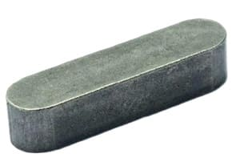

DG
База знаний
ДАМИР ГРУПП
Категории
ГОСТ / DIN / ISO
На сайт
База знаний
/
Шпонки/крепёж
Шпонки/крепёж
6 типов изделий в категории.

DIN 6885 шпонка призматическая
DIN 6885
DIN 6887 Шпонка клиновая врезная
DIN 6887 · ISO 774
DIN 6888 шпонка сегментная
DIN 6888
ГОСТ 8787-68 / DIN 6880 Шпоночная сталь
DIN 6880 · ГОСТ 8787-68
Услуги по порошковой покраске крепежа
DIN 439 · ISO 4035
Услуги по цинкованию крепежа
DIN 439 · ISO 4035